― 우라소에점(2023년 11월) ―
2023년 11월에 먹었습니다. 이 가게는 '제13회 오키나와 소바 스탬프 랠리(2023.10.1~2024.2.29)' 참가점으로, 34개 점포 중 15번째 점포로 갔습니다😊
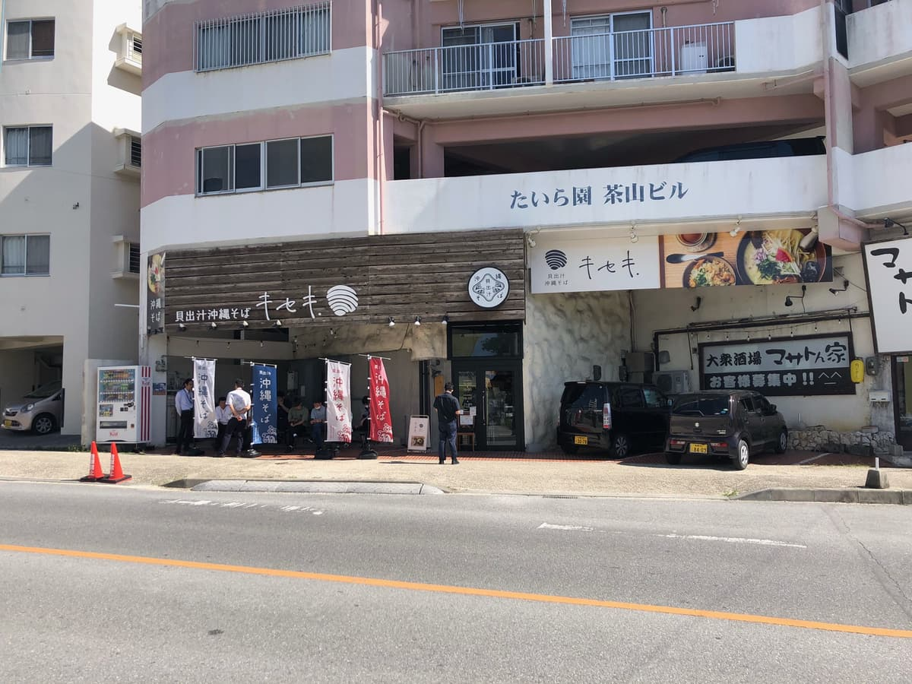
이 가게는 가게 측 주차장뿐 아니라 사진 맞은편에도 주차장이 몇 대분 있는데, 입구 근처에 많은 손님이 줄 서 있었습니다. 점심시간이긴 해도 평일인데 엄청난 인기 가게라는 걸 알 수 있네요.
다만 바깥 벤치에 앉아 있는 사람도 있어서, 다 먹고 쉬는 손님인지 기다리는 손님인지 알 수 없어서 가게 안에 들어가 점원에게 확인했습니다.
그러자 입구 근처의 QR 코드로 친구 LINE 추가를 해서 순번을 기다리라는 안내가.
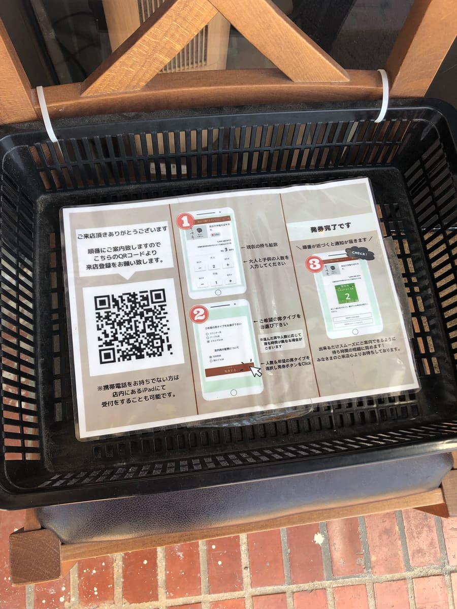
LINE으로 순번 등록이라니 왠지 최첨단 느낌이라 좋네요🤗 지금까지 100개 정도의 오키나와 소바 가게를 돌았는데(2023년 11월 시점) 이런 시스템은 처음입니다. 테크놀로지를 잘 활용하고 있어서 좋은 느낌이에요.
LINE 순서에 따라 등록. 5번째 대기 손님으로 설정되었어요 ㅋㅋ
순번이 되면 LINE으로 알림이 옵니다. 그 알림을 받고 가게에 들어가니 식권 발매기 앞에서 점원이 여러 메뉴를 설명해 주었습니다. 새로운 가게라서 신경 써 주는 것 같아요.
게다가 새 가게 안은 세련된 느낌이고, 젊은 여성 혼자 온 손님도 있었습니다. 주변 회사원이나 젊은 여성 손님 등 다양한 고객층이 있다고 생각했어요.
저는 점원이 설명하는 도중에 '스탬프 랠리 책자에서 소개된 오키나와 소바를 주문하겠습니다'라고 말하고 '가이다시 오키나와 소바(단품)'를 주문하기로 했습니다.
하지만 순번 등록은 LINE 등 테크놀로지를 활용하면서, 식권 발매기는 놀랍게도 현금만 가능(;^ω^) 기왕이면 이쪽도 캐시리스를 도입해 주면 좋겠어요, 새 가게인데 이 부분은 아쉽다고 생각했습니다.
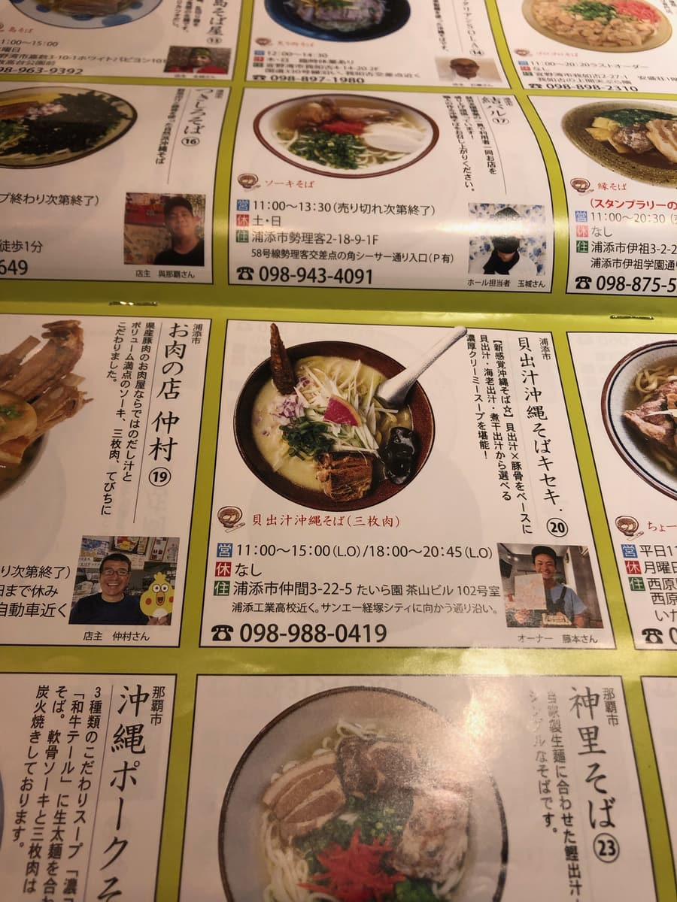
스탬프 랠리 책자에서는 '조개 육수·새우 육수·멸치 육수' 중에서 고를 수 있는 것 같은데, 여기서는 간판 메뉴로 보이는 가게 이름과 같은 '조개 육수'로 주문했어요 ㅋㅋ
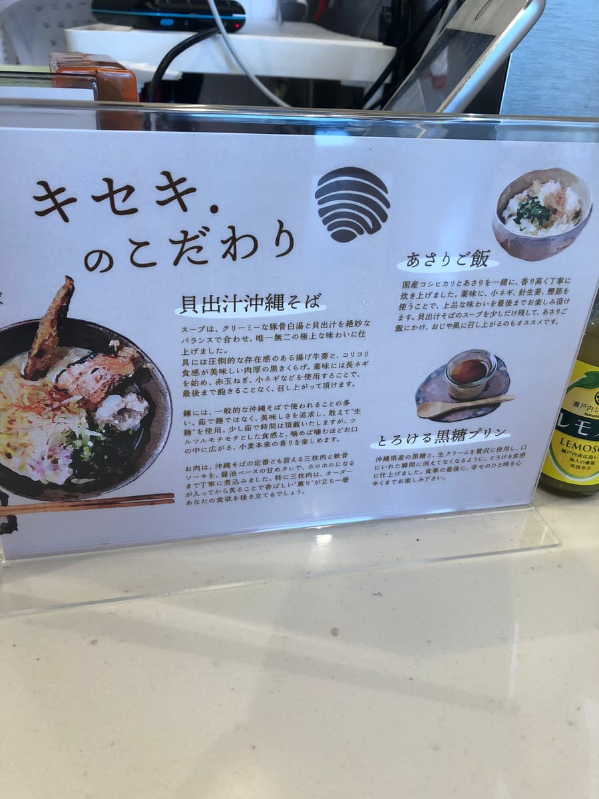
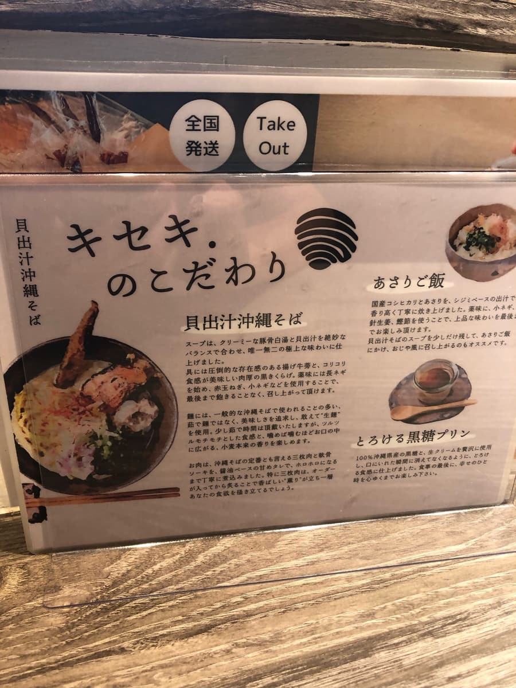
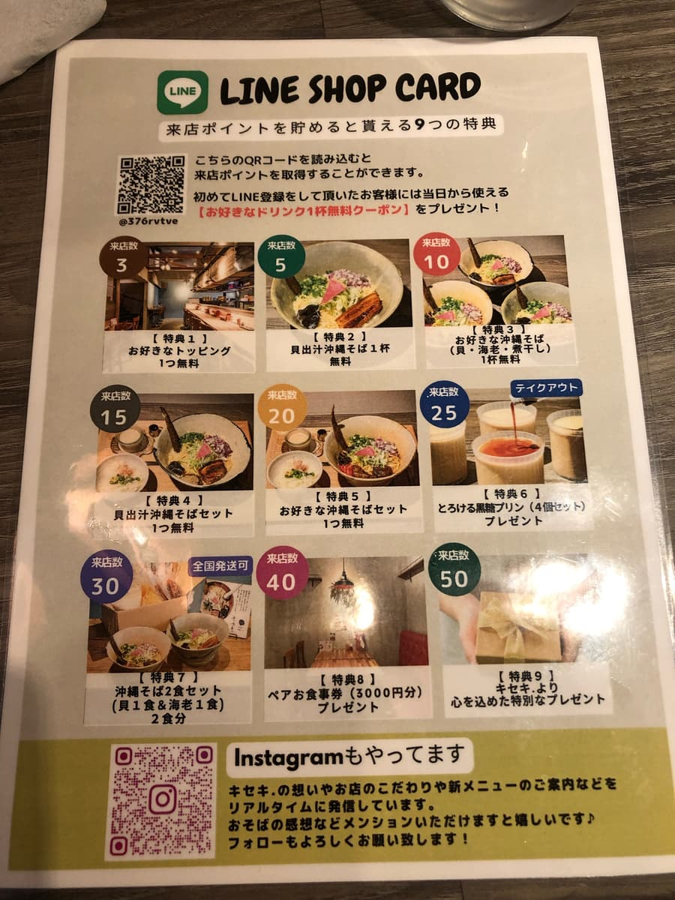
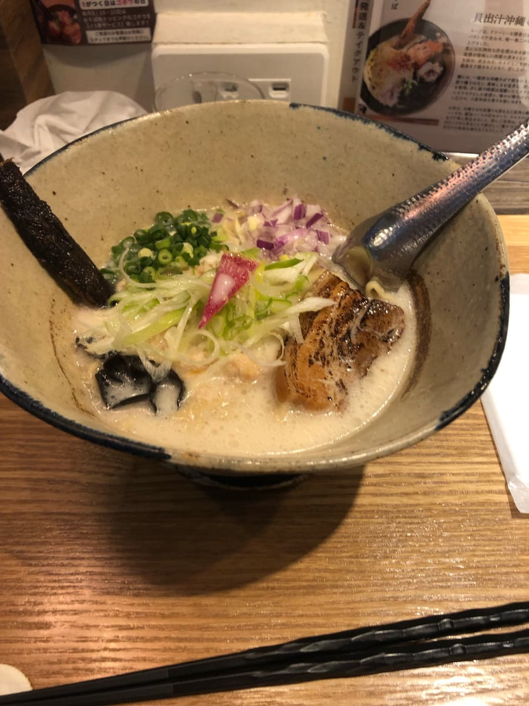
조금 시간이 걸려 주문한 '가이다시 오키나와 소바'가 나왔습니다. SNS에서 돋보일 것 같은 비주얼이네요, 여성 손님에게 확실히 인기를 끌 것 같아요.
우선 늘 하던 대로 국물을 맛보기로 했습니다😊 이 하얀 국물이 제멋대로 조개 육수 색이라고 생각했는데, 설명 패널에 '크리미한 돼지뼈 백탕과 조개 육수를 절묘한 균형으로 합쳐...'라고 설명이 있는 걸 보면 돼지뼈 백탕의 뽀얀 색이라고 생각했습니다. 예전에 먹은 나하시 '나카자야'의 뽀얀 국물이 떠올랐어요.
확실히 국물을 마시면, 상상으로는 조개 육수가 엄청 우러난 국물을 떠올렸는데 그 정도로 조개 육수가 느껴지지 않고 돼지뼈 백탕 베이스가 강하다고 생각했습니다. 상품명에 '조개 육수'라고 적혀 있으니 조개 육수가 더 우러나도 좋겠다고 느꼈어요.
가게 안에서는 꽤 조개 육수 냄새가 났기 때문에 조금 아쉽네요(;^ω^)
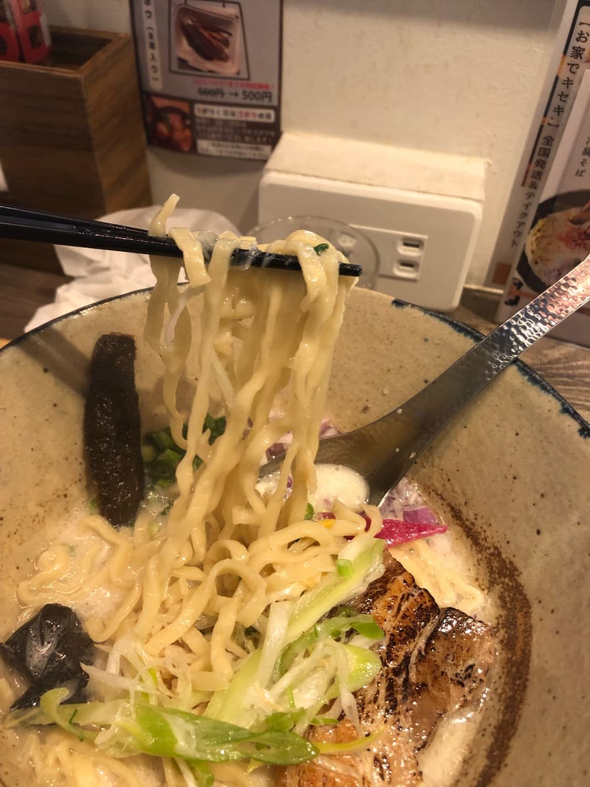
다음은 면을 먹어 봅니다. 중간 굵기 면은 약간 곱슬이고, 이쪽도 설명에는 '삶은 면이 아니라 생면을 사용'이라고 되어 있었습니다. 다만 다른 가게에서 먹은 적 있는 생면의 매끈함, 쫀득함은 별로 느껴지지 않고 오히려 부드러운 식감이었습니다.
고명도 새로운 감각이에요😁 우선 스탬프 랠리 책자 사진부터 궁금했던 가늘고 긴 고명(웃음) 제멋대로 '조개?'라고 생각했는데, 설명 패널을 보니 '튀긴 우엉'이라고(;^ω^) 먹어 보니 확실히 우엉이었어요 ㅋㅋ
목이버섯도 다른 가게에는 없는 고명이네요. 또 삼겹살 조림(산마이니쿠)은 평범하게 부드럽고 맛있지만, '주문이 들어가면 불에 그슬린다'고 설명에 있었는데 이쪽도 향이 별로 느껴지지 않는 느낌이었습니다.
얼마 전 스탬프 랠리에서 먹고 '추천에도 뒤지지 않는' 코너에서 소개한 '오키나와 포크 소바'에서 먹은 그슬린 연골 돼지갈비(난코츠 소키)의 풍미와 맛이 인상에 남아 있어서, 죄송하지만 임팩트가 부족한 인상입니다🙇
또 다 먹은 뒤에 LINE으로도 알림이 온 '1토핑 서비스권'과, 전국에 체인을 두고 있는 홋카이도·삿포로 수프 카레 전문점 'Rojiura Curry SAMURAI.'와 이 가게가 자매점이라고 해서 수프 카레 할인권을 받았습니다🙂
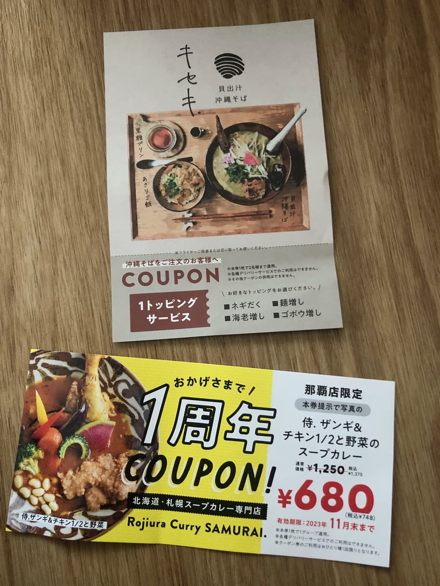
평가(9점/15점): 아니 뭐, 평범하게 맛있지만 가게 이름이 '조개 육수'라서 국물은 돼지뼈보다 조개 육수를 더 우려낸 국물이 좋지 않을까 하고 생각해 버렸습니다. 가게 분위기는 아주 세련되고 인기 가게이긴 하지만, 기대하고 온 만큼 조금 아쉬웠습니다. 식권 발매기가 캐시리스 미대응인 것도 아쉬웠어요. 그리고 2023년 11월 말까지가 기한이라고 되어 있지만, 홋카이도·삿포로 수프 카레 전문점 'Rojiura Curry SAMURAI.'의 할인권도 지금이라면 받을 수 있으니, 한 번쯤 가 보시는 건 어떨까요?😊
면: ★★★☆☆（3）
수프: ★★★☆☆（3）
토핑: ★★★☆☆（3）
― 차탄점(2024년 10월) ―
이 글은 AI(Chat GPT 4o)로 작성하고 일부 덧붙였습니다😁
2024년 10월에 먹었습니다. 이 가게는 '제14회 오키나와 소바 스탬프 랠리(2024.10.1~2025.2.28)' 참가점으로, 33개 점포 중 1번째 점포로 갔습니다😊
'가이다시 오키나와 소바 기세키.'는 작년 스탬프 랠리에서 우라소에점에서 먹은 이후 처음이에요😆 차탄초 미하마의 아메리칸 빌리지에 2호점이 생겼군요
'가이다시 오키나와 소바 기세키. 우라소에점'은 작년 스탬프 랠리에서 1등 인기 가게였습니다. 이쪽 차탄점도 지지 않는 세련된 분위기가 매력적이네요✨ 관광지다운 세련된 외관으로, 현지 사람들은 물론 관광객에게도 사랑받을 것 같습니다.
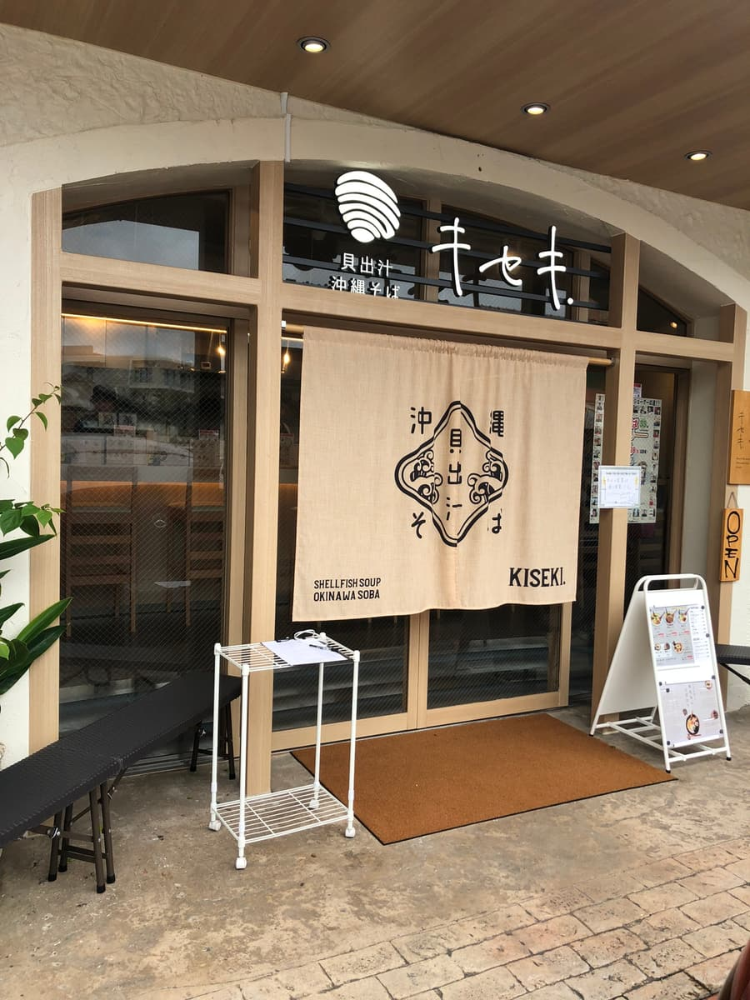
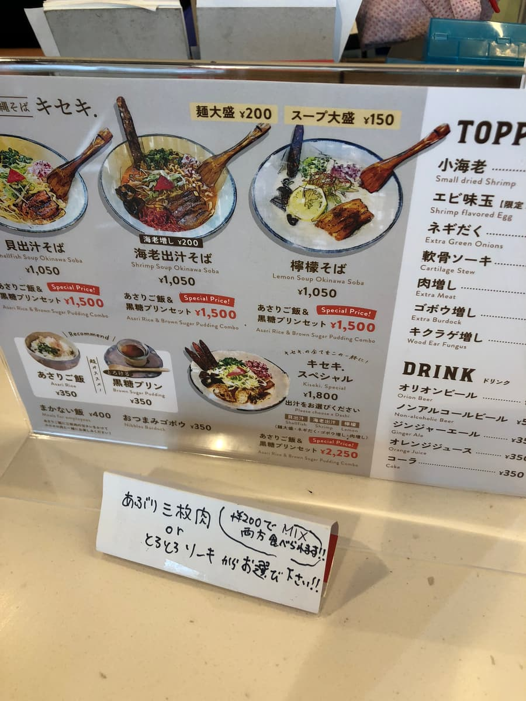
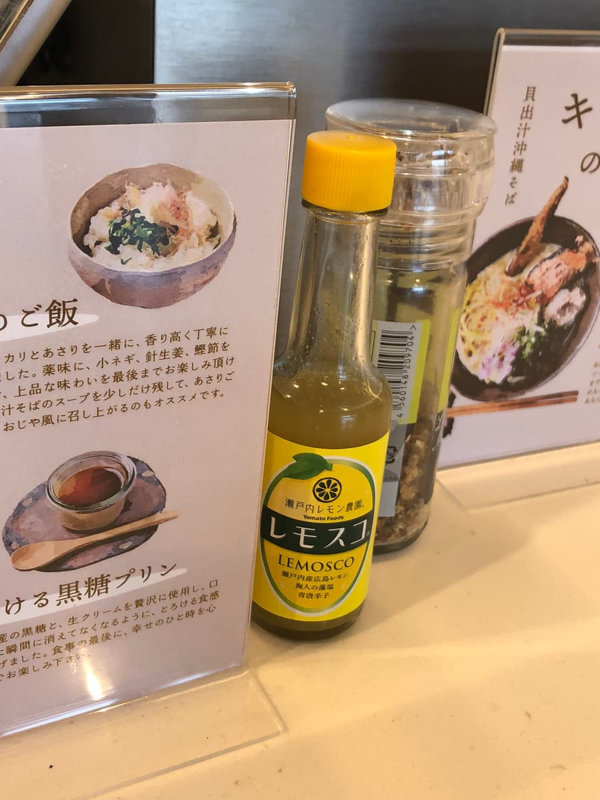
이번에 주문한 것은 스탬프 랠리 책자에서 소개된 '진한 새우 육수 오키나와 소바'에, 점원이 권하는 대로 새우 토핑을 늘리고 거기에 달걀과 그슬린 삼겹살 조림(산마이니쿠)을 추가했습니다(^0^;).
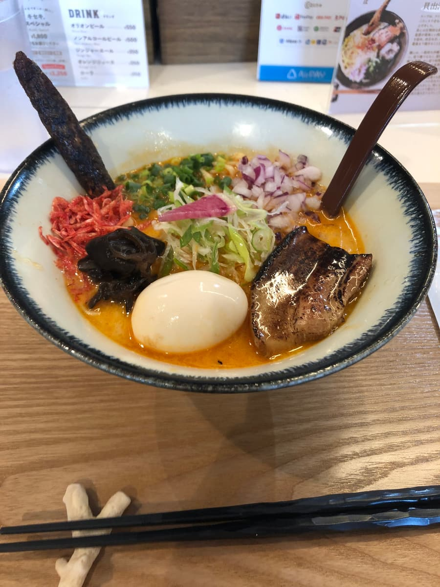
겉모습부터 화려하고 호화로운 소바네요. 색색의 토핑과 진해 보이는 국물이 그릇 속에서 아름답게 어우러져 있습니다. 이건 기대하지 않을 수 없어요.
우선 국물부터 한 모금. 이름에 걸맞게 진한 새우 풍미가 입안 가득 퍼집니다🦐 이 고소한 감칠맛은 지금까지의 오키나와 소바에서는 좀처럼 맛볼 수 없는 타입이네요. 새우를 좋아하는 사람에게는 참을 수 없는 한 그릇이라고 생각합니다. 다만 돼지뼈나 가쓰오부시 같은 오키나와 소바 특유의 맛을 기대하면 조금 놀랄지도 모릅니다. 이 국물은 새우에 특화되어 있어서 완전히 창작계 오키나와 소바라는 인상이에요.
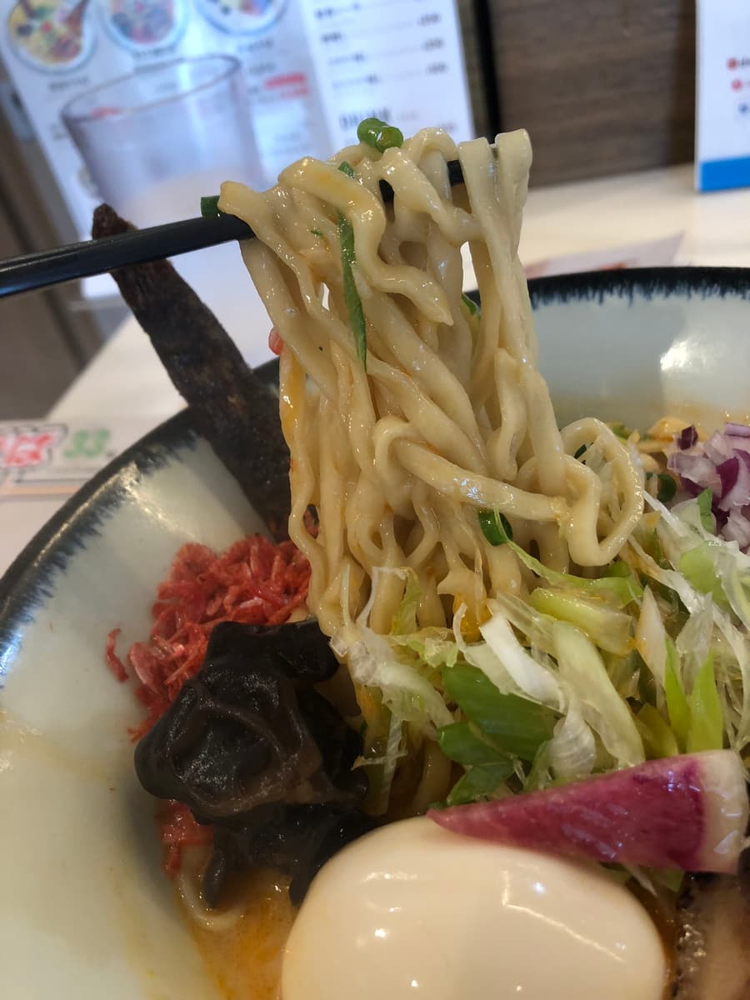
면은 중간 정도로 가는 느슨한 곱슬의 생면으로, 부드러운 것이 특징이었습니다😊 국물의 진함을 받아내기에는 조금 쫄깃함이 약하다고 느낀 부분도 있었어요.
토핑도 인상적입니다✨ 튀긴 우엉의 존재감이 또 독특해요. 식감과 고소한 풍미가 포인트가 되어 조금 건강한 인상을 주었습니다. 이 발상은 꽤 재미있네요.
또 새우 토핑을 늘린 덕분에 국물과의 일체감이 더욱 높아졌습니다. 겉모습의 호화로움은 물론이고, 새우를 좋아하는 사람에게는 참을 수 없는 호사스러움을 즐길 수 있어요. 전체적으로 고명의 균형이 잡혀 있고, 새로운 오키나와 소바의 형태를 제안하고 있다는 인상을 받았습니다🌈.
가게 안은 아주 세련되어서 여성이나 커플에게 인기가 있을 듯한 분위기였어요💕 우라소에점도 세련됐지만, 이곳 차탄점의 공간도 지지 않고 멋집니다.
평가(9점/15점): 자, 종합적인 감상으로는 평범하게 맛있었고 '진한 새우 육수 오키나와 소바'는 매우 독특하고 맛있는 한 그릇이었지만, 저에게는 '평범'한 인상으로 귀결되었습니다😌 진한 새우 풍미가 특징적이라 신선한 경험을 즐길 수 있는 한편, 전통적인 오키나와 소바의 매력을 찾는 사람에게는 조금 부족할지도 모릅니다. 그래도 이 창작 소바는 한 번 시도해 볼 가치가 있다고 생각해요. 특히 새우를 좋아하는 분께는 꼭 추천하고 싶습니다.
면: ★★★☆☆（3）
수프: ★★★☆☆（3）
토핑: ★★★☆☆（3）